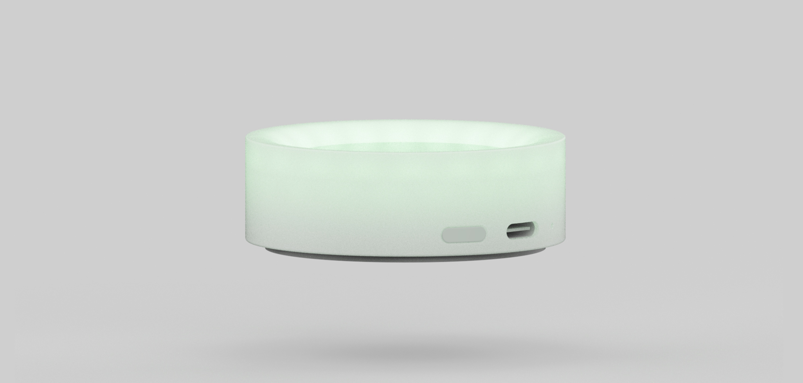
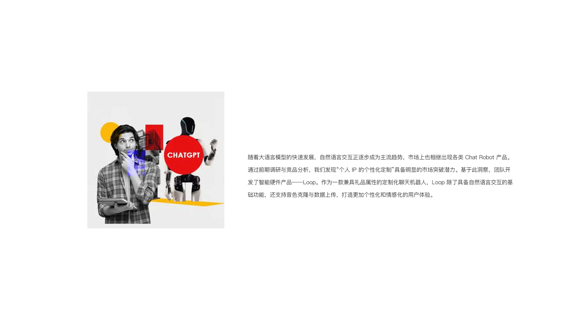
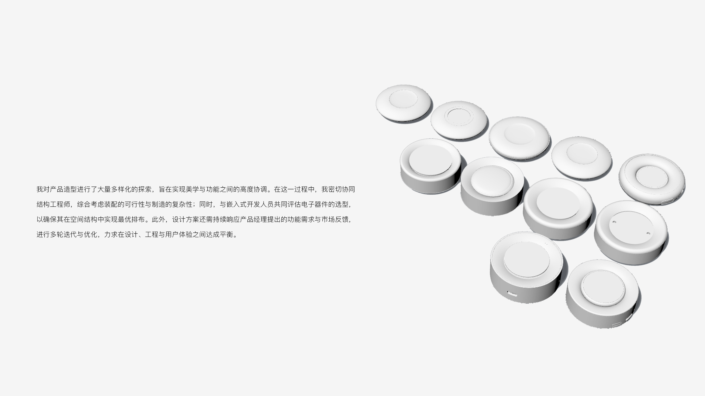
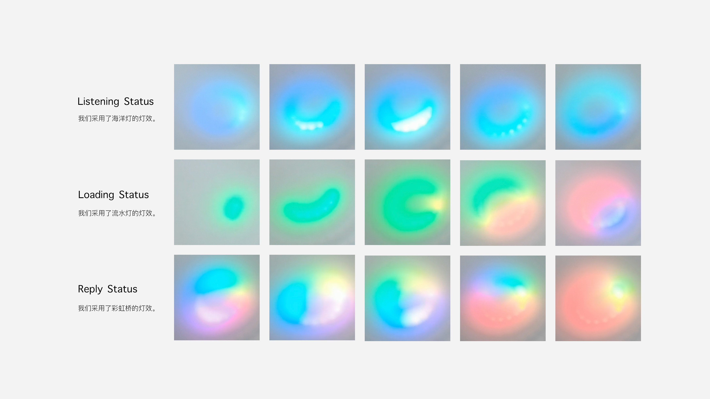
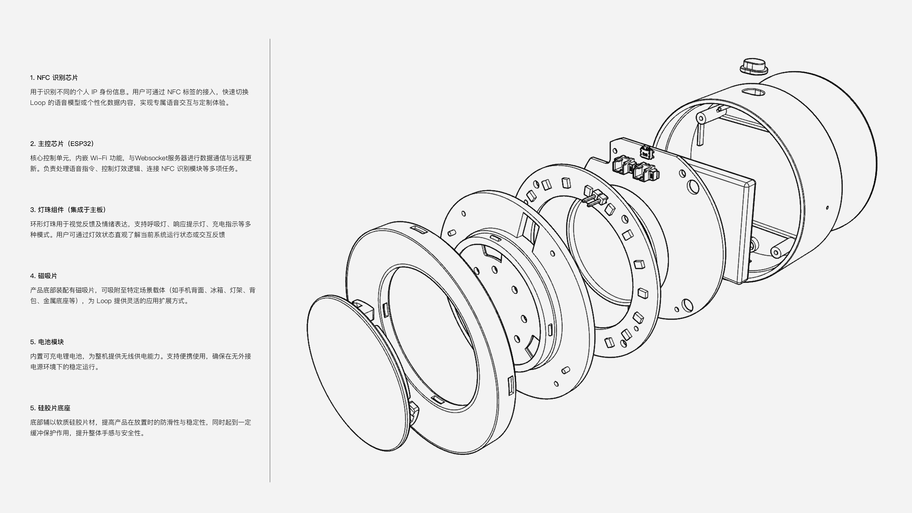
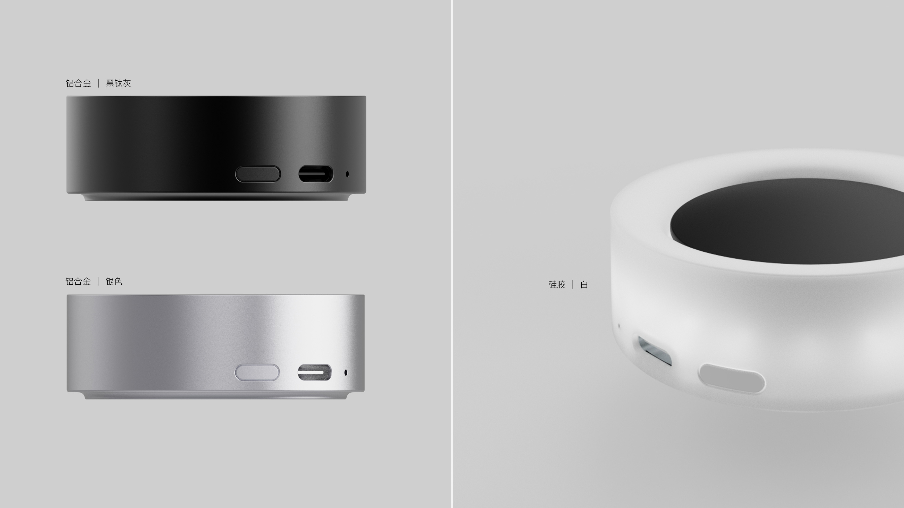
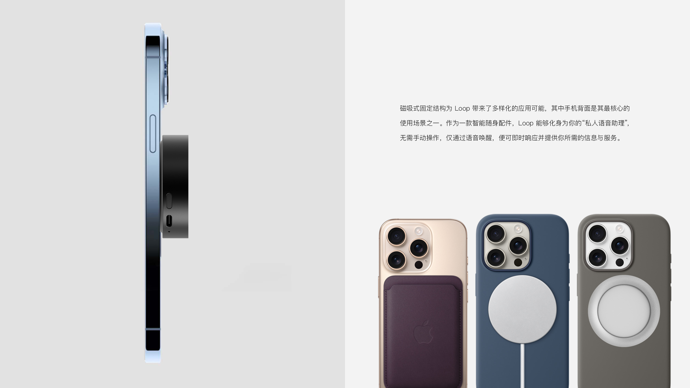

Loop
Staff / 参与者
LiangHou
Loop is an AI Chat Robot designed for personalized IP customization, integrating LLM-powered natural language interaction with intelligent hardware. It supports customizable appearance, voice cloning, and data uploading, while combining lighting, voice, and sound effects to create multimodal feedback. Through iterative form exploration and five functional prototypes, the project explores a more personalized, emotional, and companion-like human–robot interaction experience.
Loop 是一款面向个人 IP 定制的 AI Chat Robot，融合大语言模型自然语言交互与智能硬件设计。机器人支持外观个性化、音色克隆及数据上传，并通过灯光、语音与音效构建多模态反馈机制。项目围绕产品外观、人机交互与功能原型展开设计，通过多轮形态迭代及五类功能原型验证，探索更具个性化、情感化与陪伴感的人机交互体验。





